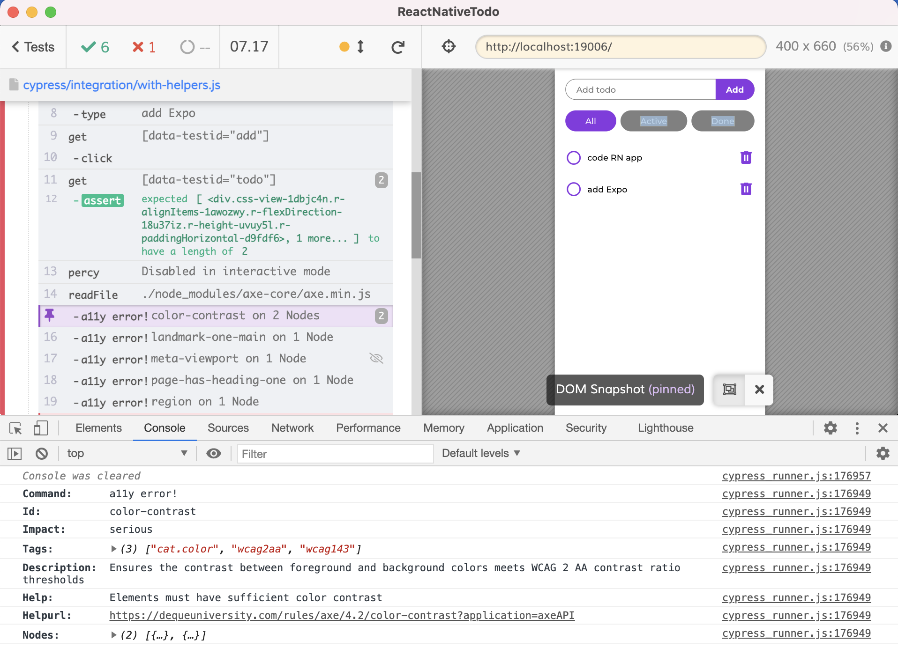
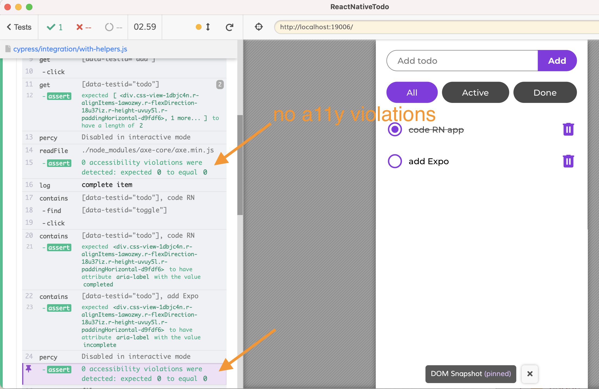

Testing React Native Todo Application Using Cypress
Integration tests for a React Native application running in the browser using Expo with network control, code coverage, visual, and a11y testing.
Introduction
Recently I have read a nice guide to writing unit and integration tests using Jest for a React Native Todo app. You can read the guide at Quick Guide to React Native Testing and see the source code at stassop/ReactNativeTodo. Recently I have been looking at how to test RN apps using Cypress.io test runner. You can read my explorations in the blog post The Complete Guide to Testing React Native App Using Cypress. In this blog post I will show how to apply the testing principles and write tests quickly and efficiently.
You can find the complete application and my tests in the repo bahmutov/ReactNativeTodo. The tests run in the browser, the typical test is shown below.
The app comes with existing tests written using Jest and executed in the terminal. The tests are pretty low-level and have to mock the entire environment, creating dependencies between the tests and the code. For example, this is the integration test as originally written by the app's author:
There are 42 lines of set up and internal code imports before we get to the test itself! Any change in the libraries or application code would require rewriting the test itself, because it is so closely coupled to the app. Let's look at the "Create todo" unit test. It is ... really verbose and tightly coupled to the code.
import * as Actions from'../../actions'; import {CreateTodo} from'../../components/CreateTodo';
// useDispatch() will be called by every test const useDispatchMock = jest.fn(); jest.spyOn(reactRedux, 'useDispatch').mockReturnValue(useDispatchMock);
it('Handles success', () => { const text = 'Todo'; const expectedAction = Actions.createTodo(text); // useSelector() will be called by every act() jest.spyOn(reactRedux, 'useSelector').mockReturnValue(null);
let renderer; // Wrap create() in act() for hooks to take effect TestRenderer.act(() => { renderer = TestRenderer.create(<CreateTodo />); }); const root = renderer.root; const textInput = root.findByType(TextInput);
// Wrap each call in act() for it to take effect before the next one TestRenderer.act(() => { textInput.props.onChangeText(text); });
That's a lot of internal set up just to ensure the app can create a todo, don't you think? Let's see if there is a better way. Remember the above tests, as we are about to see a much simpler way.
Adding Expo
The application was set to run using react-native on iOS or Android devices. To write Cypress tests, I added Expo tool. This tools makes it possible to see the same RN app bundled and running in the regular browser. Having the application running in the browser while developing and testing it has advantages:
it is faster to bundle and open the app in the browser than compiling and running the app in the emulator
the browser DevTools are really helpful for debugging the application
finally, if we have a web application, we can write tests using Cypress!
I have added Expo to the Todo app following the Expo guide.
1 2 3 4 5 6 7
# match the React DOM version to the React version $ npm i -D expo expo-cli react-native-web react-dom@17.0.1 babel-preset-expo + react-dom@17.0.1 + react-native-web@0.17.0 + expo-cli@4.5.2 + expo@41.0.1 + babel-preset-expo@8.3.0
Then I started using Expo icons and fonts to make sure the app looks in the browser the same as on iOS.
The simplest test can load the application and stop. Any errors in the application's code, a thrown error, or an unhandled promise rejection would fail this test.
Let's add a couple of Todo items and verify they appear in the list. We need to somehow select the input text box. Let's add the testID property to the component.
React Native automatically maps the testID="add-todo" to the HTML attribute data-testid="add-todo" when the application is running in the browser. Similarly I will add a test ID to the Todo components.
Tip: I have added accessibility label too, we will use it later to confirm the task completion works.
Let's extend our test by adding several todo items and confirming they appear.
1 2 3 4 5 6 7 8 9 10 11 12 13 14 15 16
/// <reference types="cypress" />
describe('RN Todos', () => { it('adds todos', () => { cy.visit('/'); // using Enter works on the web cy.get('[data-testid=add-todo]') .should('have.focus') .type('code RN app{enter}'); cy.get('[data-testid=todo]').should('have.length', 1); // clicking "Add" button works too cy.get('[data-testid=add-todo]').type('add Expo'); cy.get('[data-testid=add]').click(); cy.get('[data-testid=todo]').should('have.length', 2); }); });
The test runs and it is a pleasure watching it.
Resetting todos
If we re-run the test the second time, it fails.
We can see the HTTP call to the server in the terminal returning an error code 500
1 2
OPTIONS /create 204 3.847 ms - - POST /create 500 14.099 ms - -
The test assumes it starts with zero items on the server. Of course, that is not true - the server keeps the previous state. There are several ways we can solve this problem; network stubbing is usually used to isolate the frontend tests from the backend. In my case I have added another endpoint to the server to remove all existing items.
it('adds todos', () => { cy.visit('/'); // using Enter works on the web cy.get('[data-testid=add-todo]') .should('have.focus') .type('code RN app{enter}'); cy.get('[data-testid=todo]').should('have.length', 1); // clicking "Add" button works too cy.get('[data-testid=add-todo]').type('add Expo'); cy.get('[data-testid=add]').click(); cy.get('[data-testid=todo]').should('have.length', 2);
cy.log('**complete item**'); cy.contains('[data-testid=todo]', 'code RN') .find('[data-testid=toggle]') .click(); cy.contains('[data-testid=todo]', 'code RN').should( 'have.attr', 'aria-label', 'completed', ); // the other todo should still be incomplete cy.contains('[data-testid=todo]', 'add Expo').should( 'have.attr', 'aria-label', 'incomplete', ); }); });
Cypress commands are chainable. Thus to find the Todo item by text, then find the toggle checkbox icon and click on it, we use the chain
I like creating longer meaningful tests that go through the entire user stories. Having long tests does not making debugging a failed tests more complex - Cypress automatically captures a video of the entire test run, and a screenshot at the moment of failure. The Command Log is clearly visible in the video and the screenshot, giving you an idea where and why the test has failed.
Let's exercise the "Active | All | Done" filters. We already have one item completed, and another one still active. So we add to our test:
The test passes. Cypress has a nice time-traveling debugger. When you hover over the commands on the left, Cypress shows the application's DOM at that moment. It even shows where the .click() clicked, and how the application has responded.
Removing todos
The last feature in our application is removing todos by clicking on the Trash icon button. Let's test it.
The above spec code is just JavaScript. If you find it too verbose, you can add little helper functions and even custom Cypress commands. Let's introduce a little utility function to return the full data attribute test id selector.
/** * Returns data attribute selector for the given test id */ const tid = testId =>`[data-testid="${testId}"]`;
describe('RN Todos with helpers', () => { beforeEach(() => { cy.request('POST', 'http://localhost:3000/delete-all'); });
it('adds todos', () => { cy.visit('/'); // using Enter works on the web cy.get(tid('add-todo')).should('have.focus').type('code RN app{enter}'); cy.get(tid('todo')).should('have.length', 1); // clicking "Add" button works too cy.get(tid('add-todo')).type('add Expo'); cy.get(tid('add')).click(); cy.get(tid('todo')).should('have.length', 2);
cy.log('**complete item**'); cy.contains(tid('todo'), 'code RN').find(tid('toggle')).click(); cy.contains(tid('todo'), 'code RN').should( 'have.attr', 'aria-label', 'completed', ); // the other todo should still be incomplete cy.contains(tid('todo'), 'add Expo').should( 'have.attr', 'aria-label', 'incomplete', );
/** * Returns data attribute selector for the given test id */ const tid = testId =>`[data-testid="${testId}"]`;
/** * Selects elements using cy.get or cy.contains * using the provided test ID attribute. */ const byTestId = (testId, text) => { if (text) { return cy.contains(tid(testId), text); }
return cy.get(tid(testId)); };
describe('RN Todos with helpers', () => { beforeEach(() => { cy.request('POST', 'http://localhost:3000/delete-all'); });
it('adds todos', () => { cy.visit('/'); // using Enter works on the web byTestId('add-todo').should('have.focus').type('code RN app{enter}'); byTestId('todo').should('have.length', 1); // clicking "Add" button works too byTestId('add-todo').type('add Expo'); byTestId('add').click(); byTestId('todo').should('have.length', 2);
cy.log('**complete item**'); byTestId('todo', 'code RN').find(tid('toggle')).click(); byTestId('todo', 'code RN').should('have.attr', 'aria-label', 'completed'); // the other todo should still be incomplete byTestId('todo', 'add Expo').should( 'have.attr', 'aria-label', 'incomplete', );
The test runs just like before, and the code is readable and easy to understand. The test is NOT coupled to the implementation details. We only interact with the external representation of the elements through the page. Thus we are free to refactor the internals of the application - as long as the test is passing, the application will be working for our users.
Code coverage
Is our single test enough? Is it effective? Are there features in our application that the test does NOT cover? Let's add code coverage to find out. I have added babel-plugin-istanbul and @cypress-io/code-coverage plugin to generate the code coverage report.
// IMPORTANT to return the config object // with the any changed environment variables return config; };
When running the test, I can see the code coverage messages from the plugin.
Let's open the HTML code coverage report
1
$ open coverage/lcov-report/index.html
Our single complete end-to-end test covers 90% of the application's source code. Let's drill into individual files to find what the test has missed. For example, let's open the code coverage report of the reducers file.
The source lines missed by the tests are highlighted in red. The missed branches and switch statements are highlighted in yellow. Our tests never encountered or tested an application error, thus we missed those lines.
Testing server errors
Let's add a test verifies the error from the server is shown on load.
We are using the cy.intercept command to mock the network call outside the browser. Thus our application really thinks that the server responded with status 500 and an error message.
Similarly, we can test how the application handles an error while creating a new Todo.
const createTodo = async (req, res, next) => { const {text} = req.body; try { if (!text) { throwError('No text provided!'); } let todos = await readTodos(); let todo = todos.find(todo => todo.text === text); if (todo) { throwError('Todo already exists!'); } else { todo = {text, id: Date.now(), done: false}; todos.push(todo); await writeTodos(todos); setTimeout(() => res.json(todo), TIMEOUT); } } catch (err) { next(err); } };
Let's verify the application shows the error message send by the server in those cases.
1 2 3 4 5 6 7 8 9 10 11 12 13 14 15 16 17 18 19
it('does not allow adding empty items', () => { // spy on the network call to create an item cy.intercept('POST', 'http://localhost:3000/create').as('create'); cy.visit('/') // note: this delay should not be necessary // but the application has a logical error // if the error happens quickly, the quickly disappears .wait(500); byTestId('add-todo').should('have.value', ''); byTestId('add').click(); // from the network spy, get the response object // and extract the error message cy.wait('@create') .its('response.body.error') .then(error => { expect(error).to.be.a('string'); byTestId('error', error).should('be.visible'); }); });
Similar test confirms we cannot add duplicate items.
1 2 3 4 5 6 7 8 9 10 11 12 13 14 15 16 17
it('does not allow duplicates', () => { // spy on the network call to create an item cy.intercept('POST', 'http://localhost:3000/create').as('create'); cy.visit('/'); byTestId('add-todo').type('duplicate{enter}'); cy.wait('@create'); // first call is successful byTestId('todo').should('have.length', 1);
byTestId('add-todo').type('duplicate{enter}'); // second call should fail cy.wait('@create') .its('response.body.error') .then(error => { expect(error).to.be.a('string'); byTestId('error', error).should('be.visible'); }); });
Let's confirm that we cannot delete an item with invalid id, and that the error message is shown. We will change the ID field in the outgoing request before it goes to the server.
it('shows error on delete', () => { // intercept the network call and change the item's id // to cause the delete to fail cy.intercept('POST', 'http://localhost:3000/delete', req => { // set invalid id req.body.id = 10; }).as('delete'); cy.visit('/'); byTestId('add-todo').type('write tests{enter}'); byTestId('todo').should('have.length', 1); byTestId('todo').first().find(tid('delete')).click();
// the delete call should fail cy.wait('@delete') .its('response.body.error') .then(error => { expect(error).to.be.a('string'); byTestId('error', error).should('be.visible'); }); // the original todo is still there byTestId('todo', 'write tests').should('be.visible'); });
We can similarly test the edge case when the user tries to complete a Todo with invalid ID. All tests run in about 7 seconds.
With these API tests, we get a new code coverage report that shows our tests cover 97% of the application's code.
We can continue chasing each missed line. We can also instrument and collect code coverage from the server's JavaScript code, see the Backend Code Coverage from Cypress API tests post.
Continuous integration
We definitely need to test our application on every commit and every pull request. Let's use GitHub Actions workflow to run our application and execute Cypress tests.
.github/workflows/ci.yml
1 2 3 4 5 6 7 8 9 10 11 12 13 14 15 16
name:e2e on: [push, pull_request] jobs: cypress-run: runs-on:ubuntu-20.04 steps: -name:Checkout uses:actions/checkout@v2
# Install NPM dependencies, cache them correctly # and run all Cypress tests -name:Cypressrun uses:cypress-io/github-action@v2 with: start:npmrunweb:server wait-on:'http://localhost:19006'
Each spec file is executed on CI.
Tip: I like adding Cypress version badge to my example projects to communicate to the readers if the project is up-to-date. Read the blog post Keep Examples Up To Date.
Visual testing
Our application looks nice, doesn't it? What if someone changes the layout or CSS properties, making it look ugly? Can we prevent style regressions? Yes, with the help of visual testing. For this project, I have added Percy.io visual service.
At every major step of the test, I take the full app screenshot using Percy command cy.percySnapshot(name).
it('adds todos', () => { cy.visit('/'); // using Enter works on the web byTestId('add-todo').should('have.focus').type('code RN app{enter}'); byTestId('todo').should('have.length', 1); // clicking "Add" button works too byTestId('add-todo').type('add Expo'); byTestId('add').click(); byTestId('todo').should('have.length', 2);
// visual snapshot cy.percySnapshot('two items');
cy.log('**complete item**'); byTestId('todo', 'code RN').find(tid('toggle')).click(); byTestId('todo', 'code RN').should('have.attr', 'aria-label', 'completed'); // the other todo should still be incomplete byTestId('todo', 'add Expo').should( 'have.attr', 'aria-label', 'incomplete', );
Note: currently the rendered screenshots are missing icons, I am investigating, see issue 366.
Cypress dashboard
Whenever Cypress executes tests, it captures the video of the entire test run. If there are any failed tests, Cypress saves an image with the failure. We could store these videos and images as CI test artifacts but a more useful approach is to record them on Cypress Dashboard.
We should set the shown record key as repo secret and pass to the test runner as an environment variable.
1 2 3 4 5 6 7 8 9 10 11 12 13
# run Cypress tests with Percy -name:Cypressrun uses:cypress-io/github-action@v2 with: install:false command-prefix:'percy exec -- npx' wait-on:'http://localhost:19006' record:true group:all # inject the Percy token env: PERCY_TOKEN:${{secrets.PERCY_TOKEN}} CYPRESS_RECORD_KEY:${{secrets.CYPRESS_RECORD_KEY}}
You can see the recorded tests on the Dashboard here. You can see each test run and drill down into each test.
The entire dev team can access all test results in a single place and track the test stats along each branch across the entire project's lifetime.
Accessability testing
Let's install cypress-axe plugin to find a11y problems in our app.
We could write a separate accessability test, but I prefer inserting the a11y checking commands into the regular tests, similar to visual testing.
1 2 3 4 5 6 7 8 9 10 11 12 13 14 15 16 17 18
it('adds todos', () => { cy.visit('/'); // using Enter works on the web byTestId('add-todo').should('have.focus').type('code RN app{enter}'); byTestId('todo').should('have.length', 1); // clicking "Add" button works too byTestId('add-todo').type('add Expo'); byTestId('add').click(); byTestId('todo').should('have.length', 2);
The first time the test runs, it finds 5 violations and fails the test.
By clicking on each violation we can print the details to the DevTols console. For example, the first violation has determined that the contrast on the filters buttons is too low.

When starting with a11y testing, you probably will have lots of errors. I recommend running just some important tests first, fixing the issues, then expanding the tests. Let's ensure the color contrast is correct by testing the cat.color only:
We can make the button background color darker to #484848 to pass the test. Then we can add another Axe check after completing an item.
1 2 3 4 5 6 7 8 9 10 11 12 13 14 15 16 17
cy.log('**complete item**'); byTestId('todo', 'code RN').find(tid('toggle')).click(); byTestId('todo', 'code RN').should('have.attr', 'aria-label', 'completed'); // the other todo should still be incomplete byTestId('todo', 'add Expo').should( 'have.attr', 'aria-label', 'incomplete', );
We fix the application and test again. This time, the test is green.

I have opened a pull request with a11y checks #1. Notice that the functional Cypress tests passed, while visual tests have caught the background color change. The GitHub checks show the failed Percy check.
We can click on the failed visual check to review the changes and approve it at the Percy Dashboard.
Once we review the visual changes and approve them, the GitHub check turns green.
Unit testing
Occasionally you need unit tests. For example, when refactoring actions or reducers it helps to run just their unit tests. The current project includes Jest unit tests, here are tests for actions.
// If a test returns nothing it will pass by default return store // Dispatch async action .dispatch(Actions.fetchTodosAsync()) // Wait for async action to complete .then(() => { // Mocked method is called expect(fetchTodosMock).toHaveBeenCalled(); // Expected actions are dispatched expect(store.getActions()).toStrictEqual(expectedActions); }); }); });
// If a test returns nothing it will pass by default return store // Dispatch async action .dispatch(Actions.fetchTodosAsync()) // Wait for async action to complete .then(() => { // Mocked method is called expect(Api.fetchTodos).to.have.been.called // Expected actions are dispatched expect(store.getActions()).to.deep.equal(expectedActions); }); }); });
We are using Sinon stubs via cy.stub and Chai assertions. We can also rewrite the above test to expose more of the objects to Cypress logging.
We can click on the Command Log entry to get more information, for example we can look at the store.getActions() command by clicking on the .invoke('getActions') entry. It prints the store object, and the yielded value, allowing us to see clearly what has happened.
The above exploration experience during testing and the debugging speed are my favorite features of running the browser unit tests in Cypress. You can find unit tests for actions, reduces, and sagas in the cypress/integration folder.
API tests
The original ReactNativeTodo repository has a few API tests, but these are NOT true API tests that exercise the backend server. Instead, these tests exercise the API wrapper that calls fetch. A typical test looks like this:
We can write better API tests by spying on the network calls made by the browser using cy.intercept command, rather than spying on the window.fetch function.
/// <reference types="cypress" /> import * as Api from'../../api';
describe('network', () => { // use cy.intercept command to spy on the // actual network calls made by the code it('creates todos', () => { const apiUrl = 'http://localhost:3000';
cy.intercept(`${apiUrl}/`, req => { // make sure the call is not cached by the browser delete req.headers['if-none-match']; }) .as('todos') .then(() => { // once we prepared the intercept // make the call using the app code Api.asyncRequest(); }); cy.wait('@todos').its('response.body').should('be.an', 'array');
// let's add a new item const todo = {text: 'Todo'}; cy.then(() => { return Api.asyncRequest(POST, 'create', todo); }); // we can also add new async commands by wrapping // the object and using cy.invoke method cy.wrap(Api).invoke('fetchTodos'); // 1 todo item cy.wait('@todos') .its('response.body') .should('have.length', 1) .its(0) // each new todo item gets a random ID // and property "done: false" at start .should('deep.include', todo) .and(todo => { expect(todo).to.have.property('id'); expect(todo).to.have.property('done', false); }); }); });
The Command Log shows each network spy and Ajax call. We can combine multiple network calls, and can even create hybrid UI + network tests.
Since I have created component testing for React a few years ago, it became part of Cypress core. I have yet to figure out how to use Metro / Expo web bundler to serve individual React Native components during tests. Stay tuned.
Help wanted
Do you want to help me write and test similar React Native applications at Mercari US? We need every technologist, from the web to the backend, to micro-services, to quality assurance, machine learning, AI, and other buzzwords. All positions are listed at https://www.mercari.com/careers/ and are remote in United States and Japan, and I guarantee a healthy professional environment with solid benefits and a huge career potential. If you ping me, I promise to answer your questions and do a referral. Career tip: read the blog posts Help Me Say Yes and Don't help me say No before applying.